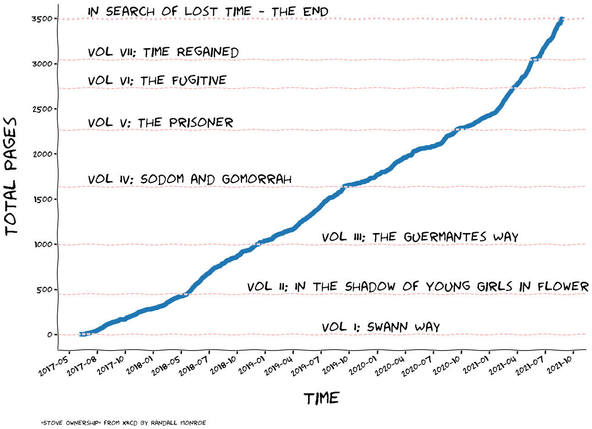

import pandas as pd
import numpy as np
Data Collection#
For the rolling plot, we start from the year-based.
The file on Dropbox must contain ALL the dates of the year
Book separation and metadata are hardcoded here (for the moment), as the layout
# read file
dir_path = './data/'
fname = 'rolling_data.csv'
df = pd.read_csv(dir_path+fname)
All the code from below this point should work from Azure function
## read from dropbox
df = pd.read_csv("https://www.dropbox.com/s/g7875nncfon1tli/rolling_data.txt?dl=1")
df['dt'] = pd.to_datetime(df['dt'])
Hardcoded book metadata#
Inputs:
initial page of the book
date of beginning of the book
Author of the book
title of the book
Can be done with a dictionary, and incrementally added to a dataframe
## First Book
book = {}
book['InitPage'] = 3
book['InitDate'] = '2022-01-25'
book['Author'] = 'D. Da Silva'
book['Title'] = 'Mia Suocera Beve'
dfmeta = pd.DataFrame([book])
## Additional Book
book = {}
book['InitPage'] = 3
book['InitDate'] = '2022-05-12'
book['Author'] = 'D. Da Silva'
book['Title'] = 'Sono Contrario\n Alle Emozioni'
df_book = pd.DataFrame([book])
dfmeta = pd.concat([dfmeta, df_book], axis=0).reset_index().drop('index', axis=1)
## Additional Book
book = {}
book['InitPage'] = 3
book['InitDate'] = '2022-05-19'
book['Author'] = 'D. Da Silva'
book['Title'] = 'Divorziare Con Stile'
df_book = pd.DataFrame([book])
dfmeta = pd.concat([dfmeta, df_book], axis=0).reset_index().drop('index', axis=1)
## Additional Book
book = {}
book['InitPage'] = 3
book['InitDate'] = '2022-06-30'
book['Author'] = 'E. Viola'
book['Title'] = 'L\'Amore e\' Eterno\n Finche\' Non Risponde'
df_book = pd.DataFrame([book])
dfmeta = pd.concat([dfmeta, df_book], axis=0).reset_index().drop('index', axis=1)
## Additional Book
book = {}
book['InitPage'] = 7
book['InitDate'] = '2022-07-10'
book['Author'] = 'C. Dickens'
book['Title'] = 'Hard Times'
df_book = pd.DataFrame([book])
dfmeta = pd.concat([dfmeta, df_book], axis=0).reset_index().drop('index', axis=1)
## Additional Book
book = {}
book['InitPage'] = 3
book['InitDate'] = '2022-08-06'
book['Author'] = 'C. Dickens'
book['Title'] = 'Great Expectations'
df_book = pd.DataFrame([book])
dfmeta = pd.concat([dfmeta, df_book], axis=0).reset_index().drop('index', axis=1)
dfmeta
| InitPage | InitDate | Author | Title | |
|---|---|---|---|---|
| 0 | 3 | 2022-01-25 | D. Da Silva | Mia Suocera Beve |
| 1 | 3 | 2022-05-12 | D. Da Silva | Sono Contrario\n Alle Emozioni |
| 2 | 3 | 2022-05-19 | D. Da Silva | Divorziare Con Stile |
| 3 | 3 | 2022-06-30 | E. Viola | L'Amore e' Eterno\n Finche' Non Risponde |
| 4 | 7 | 2022-07-10 | C. Dickens | Hard Times |
| 5 | 3 | 2022-08-06 | C. Dickens | Great Expectations |
Complete the raw dataset#
Forward fill for nan
Add zeros for remaining nan
Add offset of book beginning
Calculate new page count
floor to zero any negative page
All zero from tomorrow
df['offset'] = 0
## Add offset from metadata
for i in dfmeta.index:
dd = dfmeta['InitDate'][i]
pp = dfmeta['InitPage'][i]
ff = df.dt >= dd
df.loc[ff,'offset'] = pp
## Check if the start of the new book is filled
ff0 = df.dt == dd
p0 = df.loc[ff0, 'page'].values[0]
## if not filled it needs to be set to offset (for ffill)
if ~(p0>-1):
print('----->',dd, pp, p0, ff.sum())
df.loc[ff0, 'page'] = 0
p0 = df.loc[ff0, 'page'].values[0]
print(dd, pp, p0, ff.sum())
## forward fill
df['page'].fillna(method='ffill', axis=0, inplace=True)
## new page count
df['page1'] = df['page']-df['offset']
## floor to zero negatives
ff = df.page1 < 0
df.loc[ff, 'page1'] = 0
## All zero from tomorrow
today = pd.to_datetime('today').normalize()
ff = df.dt > today
df.loc[ff, 'page1'] = 0
df.loc[ff, 'page'] = 0
## rename columns
df.rename(columns={'page':'page_orig', 'page1':'page'}, inplace=True)
2022-01-25 3 3.0 341
2022-05-12 3 5.0 234
-----> 2022-05-19 3 nan 227
2022-05-19 3 0.0 227
2022-06-30 3 15.0 185
2022-07-10 7 7.0 175
2022-08-06 3 308.0 148
Make the plot#
import matplotlib.pyplot as plt
import numpy as np
from matplotlib.dates import DateFormatter
import matplotlib.dates as mdates
from datetime import timedelta
df.index = pd.to_datetime(df["dt"])
df
| dt | page_orig | offset | page | |
|---|---|---|---|---|
| dt | ||||
| 2022-01-25 | 2022-01-25 | 3.0 | 3 | 0.0 |
| 2022-01-26 | 2022-01-26 | 3.0 | 3 | 0.0 |
| 2022-01-27 | 2022-01-27 | 3.0 | 3 | 0.0 |
| 2022-01-28 | 2022-01-28 | 3.0 | 3 | 0.0 |
| 2022-01-29 | 2022-01-29 | 3.0 | 3 | 0.0 |
| ... | ... | ... | ... | ... |
| 2022-12-27 | 2022-12-27 | 0.0 | 3 | 0.0 |
| 2022-12-28 | 2022-12-28 | 0.0 | 3 | 0.0 |
| 2022-12-29 | 2022-12-29 | 0.0 | 3 | 0.0 |
| 2022-12-30 | 2022-12-30 | 0.0 | 3 | 0.0 |
| 2022-12-31 | 2022-12-31 | 0.0 | 3 | 0.0 |
341 rows × 4 columns
## Restrict the plots up to 1 week after tomorrow
today = pd.to_datetime('today').normalize()
date_threshold = today + timedelta(days=5)
date_threshold
Timestamp('2022-10-04 00:00:00')
df1 = df[:date_threshold]
df1.page.plot()
<AxesSubplot:xlabel='dt'>
#last_row = [7, '2021-06-18', '2021-09-21', 451, 'Time Regained']
## create dfadd
#df_extra = pd.DataFrame(np.array([last_row]), columns = df_meta.columns)
#df_meta = pd.concat([df_meta, df_extra], axis=0)
def SetTit(ax, tt='ippo'):
ax.set_xlabel(tt, labelpad=30, fontsize=40)
## vol1
def SetVolumeAnnotation(ax, idx=0, x_pos_text = '2022-02-01', y_pos_aut = 100, y_pos_btit = 100, x_pos_end = '2022-02-20', y_pos_end = 100, size_aut=15, size_btit=20, do_arrow=True):
## posiion title relative
if (y_pos_btit <0):
y_pos_btit = y_pos_aut + y_pos_btit
aut, btit = GetNames(idx)
print(aut, btit)
## author
ax.annotate(aut, xy=(x_pos_text,y_pos_aut), fontsize=size_aut)
#x_pos = x_pos
#_pos = y_pos_text
## - book text
#ax.annotate(f'"{btit}"', xy=(x_pos,y_pos-10), fontsize=25)
## Another kind with arrow -
## https://matplotlib.org/stable/api/_as_gen/matplotlib.axes.Axes.annotate.html
## https://matplotlib.org/stable/tutorials/text/annotations.html
if do_arrow:
ax.annotate(
#'THE DAY I REALIZED\nI COULD COOK BACON\nWHENEVER I WANTED',
f'"{btit}"',
size=size_btit,
#xycoords='axes fraction', ## specify coord system
xy=(x_pos_end, y_pos_end), ## endpoint arrrow
xytext=(x_pos_text, y_pos_btit), ## text point
arrowprops=dict(arrowstyle='->'), ## (text) -> (endpoint)
#xy=(0.35, 0.11),
#arrowprops=dict(arrowstyle='->', connectionstyle="angle3,angleA=90,angleB=0"),
#xytext=(0.4, 0.25)
)
else:
ax.annotate(
#'THE DAY I REALIZED\nI COULD COOK BACON\nWHENEVER I WANTED',
f'"{btit}"',
size=size_btit,
#xycoords='axes fraction', ## specify coord system
xy=(x_pos_end, y_pos_end), ## endpoint arrrow
xytext=(x_pos_text, y_pos_btit), ## text point
#arrowprops=dict(arrowstyle='->'), ## (text) -> (endpoint)
#xy=(0.35, 0.11),
#arrowprops=dict(arrowstyle='->', connectionstyle="angle3,angleA=90,angleB=0"),
#xytext=(0.4, 0.25)
)
def GetNames(ll=0): ## provide volume idx
aut = dfmeta.loc[ll,'Author']
btit = dfmeta.loc[ll,'Title']
print(aut, btit)
return aut, btit
dfmeta
| InitPage | InitDate | Author | Title | |
|---|---|---|---|---|
| 0 | 3 | 2022-01-25 | D. Da Silva | Mia Suocera Beve |
| 1 | 3 | 2022-05-12 | D. Da Silva | Sono Contrario\n Alle Emozioni |
| 2 | 3 | 2022-05-19 | D. Da Silva | Divorziare Con Stile |
| 3 | 3 | 2022-06-30 | E. Viola | L'Amore e' Eterno\n Finche' Non Risponde |
| 4 | 7 | 2022-07-10 | C. Dickens | Hard Times |
| 5 | 3 | 2022-08-06 | C. Dickens | Great Expectations |
import io
with plt.xkcd():
# Based on "Stove Ownership" from XKCD by Randall Monroe
# http://xkcd.com/418/
# Some other good examples:
# https://jakevdp.github.io/blog/2012/10/07/xkcd-style-plots-in-matplotlib/
# https://matplotlib.org/xkcd/gallery.html
fig = plt.figure(figsize=(25,15))
ax = fig.add_axes((0.1, 0.1, 0.75, 0.8))
ax.spines['right'].set_color('none')
ax.spines['top'].set_color('none')
#plt.xticks([])
#plt.yticks([])
#ax.set_ylim([-30, 10])
ax = df1.page.plot(linewidth=6)
###----- VERTICAL LINES END/START BOOK
for dd in dfmeta.InitDate:
ax.axvline(dd, color="red", linestyle="--", linewidth=2, alpha=0.3)
print(dd)
ax = df1.page.plot(linewidth=5, color='blue')
###---- VOLUME ANNOTATION
aut, btit = GetNames(0)
## Another kind with arrow -
## https://matplotlib.org/stable/api/_as_gen/matplotlib.axes.Axes.annotate.html
## https://matplotlib.org/stable/tutorials/text/annotations.html
SetVolumeAnnotation(ax, idx=0, x_pos_text = '2022-02-20', y_pos_aut = 400, y_pos_btit = -15, x_pos_end = '2022-04-10', y_pos_end = 100, size_aut=20, size_btit=25,do_arrow=False)
SetVolumeAnnotation(ax, idx=1, x_pos_text = '2022-05-03', y_pos_aut = 480, y_pos_btit = -25, x_pos_end = '2022-05-15', y_pos_end = 100, size_aut=15, size_btit=18,do_arrow=False)
SetVolumeAnnotation(ax, idx=2, x_pos_text = '2022-05-20', y_pos_aut = 400, y_pos_btit = -13, x_pos_end = '2022-06-15', y_pos_end = 110, size_aut=15, size_btit=20,do_arrow=False)
SetVolumeAnnotation(ax, idx=3, x_pos_text = '2022-06-20', y_pos_aut = 450, y_pos_btit = -25, x_pos_end = '2022-07-04', y_pos_end = 110, size_aut=13, size_btit=18,do_arrow=False)
SetVolumeAnnotation(ax, idx=4, x_pos_text = '2022-07-10', y_pos_aut = 400, y_pos_btit = -15, x_pos_end = '2022-07-31', y_pos_end = 210, size_aut=20, size_btit=25,do_arrow=False)
SetVolumeAnnotation(ax, idx=5, x_pos_text = '2022-08-15', y_pos_aut = 450, y_pos_btit = -20, x_pos_end = '2022-08-15', y_pos_end = 335, size_aut=23, size_btit=30, do_arrow=False)
###---- OVERALL FIGURE LAYOUT
ax.set_xlabel('time', labelpad=30, fontsize=40)
ax.set_ylabel('Number of Pages', labelpad=30, fontsize=40)
ax.set_ylim(0,500)
#SetTit(ax)
#SetTit(ax,'Date')
ax.set_xlabel('Date', labelpad=30, fontsize=40)
ax.tick_params(axis='both', labelsize=20) ## rotation, etc...
# Define the date format
date_form = DateFormatter("%Y-%m-%d")
ax.xaxis.set_major_formatter(date_form)
# Ensure ticks fall once every other week (interval=2)
ax.xaxis.set_major_locator(mdates.WeekdayLocator(interval=4))
###----- OUTSIDE FIGURE ANNOTATION
tday = df1.loc[today,'dt'].strftime('%d %B %Y')
tpage = df1.loc[today,'page']
fig.text(
0.1, 0.01,
f"Updated to {tday}",
fontsize=20,
ha='center')
fig.text(
0.5, 0.95,
f"My 2022 Book Reading Log",
fontsize=50,
ha='center')
fig_file = io.BytesIO()
fig.savefig('fig_file')
#fig.savefig('test.png')
2022-01-25
2022-05-12
2022-05-19
2022-06-30
2022-07-10
2022-08-06
D. Da Silva Mia Suocera Beve
D. Da Silva Mia Suocera Beve
D. Da Silva Mia Suocera Beve
D. Da Silva Sono Contrario
Alle Emozioni
D. Da Silva Sono Contrario
Alle Emozioni
D. Da Silva Divorziare Con Stile
D. Da Silva Divorziare Con Stile
E. Viola L'Amore e' Eterno
Finche' Non Risponde
E. Viola L'Amore e' Eterno
Finche' Non Risponde
C. Dickens Hard Times
C. Dickens Hard Times
C. Dickens Great Expectations
C. Dickens Great Expectations
fig_file
<_io.BytesIO at 0x1ad70f510>
df1['2022-08']
/tmp/ipykernel_43874/1098416998.py:1: FutureWarning: Indexing a DataFrame with a datetimelike index using a single string to slice the rows, like `frame[string]`, is deprecated and will be removed in a future version. Use `frame.loc[string]` instead.
df1['2022-08']
| dt | page_orig | offset | page | |
|---|---|---|---|---|
| dt | ||||
| 2022-08-01 | 2022-08-01 | 228.0 | 7 | 221.0 |
| 2022-08-02 | 2022-08-02 | 242.0 | 7 | 235.0 |
| 2022-08-03 | 2022-08-03 | 254.0 | 7 | 247.0 |
| 2022-08-04 | 2022-08-04 | 268.0 | 7 | 261.0 |
| 2022-08-05 | 2022-08-05 | 284.0 | 7 | 277.0 |
| 2022-08-06 | 2022-08-06 | 308.0 | 3 | 305.0 |
| 2022-08-07 | 2022-08-07 | 8.0 | 3 | 5.0 |
| 2022-08-08 | 2022-08-08 | 17.0 | 3 | 14.0 |
| 2022-08-09 | 2022-08-09 | 26.0 | 3 | 23.0 |
| 2022-08-10 | 2022-08-10 | 33.0 | 3 | 30.0 |
| 2022-08-11 | 2022-08-11 | 45.0 | 3 | 42.0 |
| 2022-08-12 | 2022-08-12 | 49.0 | 3 | 46.0 |
| 2022-08-13 | 2022-08-13 | 49.0 | 3 | 46.0 |
| 2022-08-14 | 2022-08-14 | 49.0 | 3 | 46.0 |
| 2022-08-15 | 2022-08-15 | 62.0 | 3 | 59.0 |
| 2022-08-16 | 2022-08-16 | 62.0 | 3 | 59.0 |
| 2022-08-17 | 2022-08-17 | 62.0 | 3 | 59.0 |
| 2022-08-18 | 2022-08-18 | 68.0 | 3 | 65.0 |
| 2022-08-19 | 2022-08-19 | 81.0 | 3 | 78.0 |
| 2022-08-20 | 2022-08-20 | 81.0 | 3 | 78.0 |
| 2022-08-21 | 2022-08-21 | 81.0 | 3 | 78.0 |
| 2022-08-22 | 2022-08-22 | 0.0 | 3 | 0.0 |
| 2022-08-23 | 2022-08-23 | 0.0 | 3 | 0.0 |
| 2022-08-24 | 2022-08-24 | 0.0 | 3 | 0.0 |
| 2022-08-25 | 2022-08-25 | 0.0 | 3 | 0.0 |
| 2022-08-26 | 2022-08-26 | 0.0 | 3 | 0.0 |
today
Timestamp('2022-08-21 00:00:00')
df1.loc[today,'page']
62.0
pd.to_datetime(df1.loc[today,'dt'], format="%Y-%m-%d")
Timestamp('2022-08-19 00:00:00')
aa = df1.loc[today,'dt'].strftime('%d %B %Y')
print(aa)
19 August 2022
with plt.xkcd():
# Based on "Stove Ownership" from XKCD by Randall Monroe
# http://xkcd.com/418/
# Some other good examples:
# https://jakevdp.github.io/blog/2012/10/07/xkcd-style-plots-in-matplotlib/
# https://matplotlib.org/xkcd/gallery.html
fig = plt.figure(figsize=(20,15))
ax = fig.add_axes((0.5, 0.2, 0.8, 0.7))
ax.spines['right'].set_color('none')
ax.spines['top'].set_color('none')
#plt.xticks([])
#plt.yticks([])
#ax.set_ylim([-30, 10])
#data = np.ones(100)
#data[70:] -= np.arange(30)
#plt.annotate(
# 'THE DAY I REALIZED\nI COULD COOK BACON\nWHENEVER I WANTED',
# xy=(70, 1), arrowprops=dict(arrowstyle='->'), xytext=(15, -10))
ax = df.tot.plot(linewidth=10)
## plot volume lines and name
title_x_positions = ['2019-08-01','2018-12-01','2019-08-01',
'2017-07-01','2017-07-01','2017-07-01','2017-07-01']
prefix_title = ['Vol I: ', 'Vol II: ','Vol III: ',
'Vol IV: ','Vol V: ','Vol VI: ','Vol VII: ']
#x = df_meta['Start_dt'].values[0]
#
#plt.plot(['2017-07-01', '2021-07-01'], [500, 500], 'k-', lw=2)
#ax.annotate("test", xy=('2017-07-01',600))
for i in range(7):
y = df_meta['Tot_pages'].values[i]
name = prefix_title[i]+df_meta.Title.values[i]
ax.axhline(y, color="red", linestyle="--", linewidth=2, alpha=0.3)
ax.annotate(name, xy=(title_x_positions[i],y+50), fontsize=30)
y = 3495
name = 'In Search of Lost Time - The END'
ax.axhline(y, color="red", linestyle=":", linewidth=4, alpha=0.3)
ax.annotate(name, xy=(title_x_positions[i],y+50), fontsize=30)
ax.set_xlabel('time', labelpad=30, fontsize=40)
ax.set_ylabel('Total Pages', labelpad=30, fontsize=40)
ax.tick_params(axis='both', labelsize=20) ## rotation, etc...
# Define the date format
date_form = DateFormatter("%Y-%m")
ax.xaxis.set_major_formatter(date_form)
# Ensure ticks fall once every other week (interval=2)
ax.xaxis.set_major_locator(mdates.WeekdayLocator(interval=13))
fig.text(
0.6, 0.05,
'"Stove Ownership" from xkcd by Randall Monroe',
ha='center')

df.info()
<class 'pandas.core.frame.DataFrame'>
RangeIndex: 341 entries, 0 to 340
Data columns (total 4 columns):
# Column Non-Null Count Dtype
--- ------ -------------- -----
0 dt 341 non-null datetime64[ns]
1 page_orig 341 non-null float64
2 offset 341 non-null int64
3 page 341 non-null float64
dtypes: datetime64[ns](1), float64(2), int64(1)
memory usage: 10.8 KB
df
| dt | page_orig | offset | page | |
|---|---|---|---|---|
| 0 | 2022-01-25 | 3.0 | 3 | 0.0 |
| 1 | 2022-01-26 | 3.0 | 3 | 0.0 |
| 2 | 2022-01-27 | 3.0 | 3 | 0.0 |
| 3 | 2022-01-28 | 3.0 | 3 | 0.0 |
| 4 | 2022-01-29 | 3.0 | 3 | 0.0 |
| ... | ... | ... | ... | ... |
| 336 | 2022-12-27 | 0.0 | 7 | 0.0 |
| 337 | 2022-12-28 | 0.0 | 7 | 0.0 |
| 338 | 2022-12-29 | 0.0 | 7 | 0.0 |
| 339 | 2022-12-30 | 0.0 | 7 | 0.0 |
| 340 | 2022-12-31 | 0.0 | 7 | 0.0 |
341 rows × 4 columns
df[110:].head(60)
| dt | page | offset | page1 | |
|---|---|---|---|---|
| 110 | 2022-05-15 | 88.0 | 3 | 85.0 |
| 111 | 2022-05-16 | 112.0 | 3 | 109.0 |
| 112 | 2022-05-17 | 140.0 | 3 | 137.0 |
| 113 | 2022-05-18 | 163.0 | 3 | 160.0 |
| 114 | 2022-05-19 | 0.0 | 3 | 0.0 |
| 115 | 2022-05-20 | 0.0 | 3 | 0.0 |
| 116 | 2022-05-21 | 0.0 | 3 | 0.0 |
| 117 | 2022-05-22 | 0.0 | 3 | 0.0 |
| 118 | 2022-05-23 | 0.0 | 3 | 0.0 |
| 119 | 2022-05-24 | 0.0 | 3 | 0.0 |
| 120 | 2022-05-25 | 10.0 | 3 | 7.0 |
| 121 | 2022-05-26 | 10.0 | 3 | 7.0 |
| 122 | 2022-05-27 | 10.0 | 3 | 7.0 |
| 123 | 2022-05-28 | 10.0 | 3 | 7.0 |
| 124 | 2022-05-29 | 12.0 | 3 | 9.0 |
| 125 | 2022-05-30 | 12.0 | 3 | 9.0 |
| 126 | 2022-05-31 | 12.0 | 3 | 9.0 |
| 127 | 2022-06-01 | 16.0 | 3 | 13.0 |
| 128 | 2022-06-02 | 16.0 | 3 | 13.0 |
| 129 | 2022-06-03 | 16.0 | 3 | 13.0 |
| 130 | 2022-06-04 | 32.0 | 3 | 29.0 |
| 131 | 2022-06-05 | 32.0 | 3 | 29.0 |
| 132 | 2022-06-06 | 32.0 | 3 | 29.0 |
| 133 | 2022-06-07 | 62.0 | 3 | 59.0 |
| 134 | 2022-06-08 | 62.0 | 3 | 59.0 |
| 135 | 2022-06-09 | 62.0 | 3 | 59.0 |
| 136 | 2022-06-10 | 62.0 | 3 | 59.0 |
| 137 | 2022-06-11 | 62.0 | 3 | 59.0 |
| 138 | 2022-06-12 | 88.0 | 3 | 85.0 |
| 139 | 2022-06-13 | 88.0 | 3 | 85.0 |
| 140 | 2022-06-14 | 88.0 | 3 | 85.0 |
| 141 | 2022-06-15 | 88.0 | 3 | 85.0 |
| 142 | 2022-06-16 | 110.0 | 3 | 107.0 |
| 143 | 2022-06-17 | 110.0 | 3 | 107.0 |
| 144 | 2022-06-18 | 110.0 | 3 | 107.0 |
| 145 | 2022-06-19 | 137.0 | 3 | 134.0 |
| 146 | 2022-06-20 | 168.0 | 3 | 165.0 |
| 147 | 2022-06-21 | 203.0 | 3 | 200.0 |
| 148 | 2022-06-22 | 220.0 | 3 | 217.0 |
| 149 | 2022-06-23 | 246.0 | 3 | 243.0 |
| 150 | 2022-06-24 | 280.0 | 3 | 277.0 |
| 151 | 2022-06-25 | 306.0 | 3 | 303.0 |
| 152 | 2022-06-26 | 306.0 | 3 | 303.0 |
| 153 | 2022-06-27 | 320.0 | 3 | 317.0 |
| 154 | 2022-06-28 | 354.0 | 3 | 351.0 |
| 155 | 2022-06-29 | 378.0 | 3 | 375.0 |
| 156 | 2022-06-30 | 15.0 | 3 | 12.0 |
| 157 | 2022-07-01 | 29.0 | 3 | 26.0 |
| 158 | 2022-07-02 | 41.0 | 3 | 38.0 |
| 159 | 2022-07-03 | 72.0 | 3 | 69.0 |
| 160 | 2022-07-04 | 94.0 | 3 | 91.0 |
| 161 | 2022-07-05 | 123.0 | 3 | 120.0 |
| 162 | 2022-07-06 | 123.0 | 3 | 120.0 |
| 163 | 2022-07-07 | 152.0 | 3 | 149.0 |
| 164 | 2022-07-08 | 174.0 | 3 | 171.0 |
| 165 | 2022-07-09 | 218.0 | 3 | 215.0 |
| 166 | 2022-07-10 | 7.0 | 7 | 0.0 |
| 167 | 2022-07-11 | 16.0 | 7 | 9.0 |
| 168 | 2022-07-12 | 25.0 | 7 | 18.0 |
| 169 | 2022-07-13 | 26.0 | 7 | 19.0 |
df[180:].head(60)
| dt | page | offset | page1 | |
|---|---|---|---|---|
| 180 | 2022-07-24 | 142.0 | 7 | 135.0 |
| 181 | 2022-07-25 | 156.0 | 7 | 149.0 |
| 182 | 2022-07-26 | 170.0 | 7 | 163.0 |
| 183 | 2022-07-27 | 184.0 | 7 | 177.0 |
| 184 | 2022-07-28 | 197.0 | 7 | 190.0 |
| 185 | 2022-07-29 | 197.0 | 7 | 190.0 |
| 186 | 2022-07-30 | 211.0 | 7 | 204.0 |
| 187 | 2022-07-31 | 214.0 | 7 | 207.0 |
| 188 | 2022-08-01 | 228.0 | 7 | 221.0 |
| 189 | 2022-08-02 | 242.0 | 7 | 235.0 |
| 190 | 2022-08-03 | 254.0 | 7 | 247.0 |
| 191 | 2022-08-04 | 254.0 | 7 | 247.0 |
| 192 | 2022-08-05 | 254.0 | 7 | 247.0 |
| 193 | 2022-08-06 | 254.0 | 7 | 0.0 |
| 194 | 2022-08-07 | 254.0 | 7 | 0.0 |
| 195 | 2022-08-08 | 254.0 | 7 | 0.0 |
| 196 | 2022-08-09 | 254.0 | 7 | 0.0 |
| 197 | 2022-08-10 | 254.0 | 7 | 0.0 |
| 198 | 2022-08-11 | 254.0 | 7 | 0.0 |
| 199 | 2022-08-12 | 254.0 | 7 | 0.0 |
| 200 | 2022-08-13 | 254.0 | 7 | 0.0 |
| 201 | 2022-08-14 | 254.0 | 7 | 0.0 |
| 202 | 2022-08-15 | 254.0 | 7 | 0.0 |
| 203 | 2022-08-16 | 254.0 | 7 | 0.0 |
| 204 | 2022-08-17 | 254.0 | 7 | 0.0 |
| 205 | 2022-08-18 | 254.0 | 7 | 0.0 |
| 206 | 2022-08-19 | 254.0 | 7 | 0.0 |
| 207 | 2022-08-20 | 254.0 | 7 | 0.0 |
| 208 | 2022-08-21 | 254.0 | 7 | 0.0 |
| 209 | 2022-08-22 | 254.0 | 7 | 0.0 |
| 210 | 2022-08-23 | 254.0 | 7 | 0.0 |
| 211 | 2022-08-24 | 254.0 | 7 | 0.0 |
| 212 | 2022-08-25 | 254.0 | 7 | 0.0 |
| 213 | 2022-08-26 | 254.0 | 7 | 0.0 |
| 214 | 2022-08-27 | 254.0 | 7 | 0.0 |
| 215 | 2022-08-28 | 254.0 | 7 | 0.0 |
| 216 | 2022-08-29 | 254.0 | 7 | 0.0 |
| 217 | 2022-08-30 | 254.0 | 7 | 0.0 |
| 218 | 2022-08-31 | 254.0 | 7 | 0.0 |
| 219 | 2022-09-01 | 254.0 | 7 | 0.0 |
| 220 | 2022-09-02 | 254.0 | 7 | 0.0 |
| 221 | 2022-09-03 | 254.0 | 7 | 0.0 |
| 222 | 2022-09-04 | 254.0 | 7 | 0.0 |
| 223 | 2022-09-05 | 254.0 | 7 | 0.0 |
| 224 | 2022-09-06 | 254.0 | 7 | 0.0 |
| 225 | 2022-09-07 | 254.0 | 7 | 0.0 |
| 226 | 2022-09-08 | 254.0 | 7 | 0.0 |
| 227 | 2022-09-09 | 254.0 | 7 | 0.0 |
| 228 | 2022-09-10 | 254.0 | 7 | 0.0 |
| 229 | 2022-09-11 | 254.0 | 7 | 0.0 |
| 230 | 2022-09-12 | 254.0 | 7 | 0.0 |
| 231 | 2022-09-13 | 254.0 | 7 | 0.0 |
| 232 | 2022-09-14 | 254.0 | 7 | 0.0 |
| 233 | 2022-09-15 | 254.0 | 7 | 0.0 |
| 234 | 2022-09-16 | 254.0 | 7 | 0.0 |
| 235 | 2022-09-17 | 254.0 | 7 | 0.0 |
| 236 | 2022-09-18 | 254.0 | 7 | 0.0 |
| 237 | 2022-09-19 | 254.0 | 7 | 0.0 |
| 238 | 2022-09-20 | 254.0 | 7 | 0.0 |
| 239 | 2022-09-21 | 254.0 | 7 | 0.0 |